2.7. Inter-Object relationships
Symmetry should be taken advantage of whenever possible in simulations. Doing so saves computational time and can increase solution accuracy. Furthermore, the smallest possible section that adequately describes the problem should be modeled.
In this lab, we will simulate the upsetting of a square ring. The square ring has quite a bit of symmetry that can be taken advantage of. This lab will show you that the deformation of the entire ring can be determined by only modeling 1/16 of its full geometry.
Sectioning of Square ring modeled for analysis
On a Windows machine, go to the  button select DEFORM-v1x.xxx (.xxx indicates version number E.g. v14.0.2)
and select DEFORM GUI Main vxx.xx from the menu. The DEFORM GUI Main window will appear as shown below Fig. 3DL2.2.
button select DEFORM-v1x.xxx (.xxx indicates version number E.g. v14.0.2)
and select DEFORM GUI Main vxx.xx from the menu. The DEFORM GUI Main window will appear as shown below Fig. 3DL2.2.
DEFORM GUI main window
Create a new problem either by selecting File  New Problem or by clicking the New Problem
New Problem or by clicking the New Problem  icon. The Problem Setup window will appear as shown in Fig. 3DL2.3. Select "Integrated Manufacturing Process"
radio button and unit system as "English" radio button in unit field. Define Problem Name as " Square_Ring " and make sure the “Show option dialog” check box is
turned on (if we do not turn on the “Show option dialog” check box, then we will not get the New Project dialog). Then click on
icon. The Problem Setup window will appear as shown in Fig. 3DL2.3. Select "Integrated Manufacturing Process"
radio button and unit system as "English" radio button in unit field. Define Problem Name as " Square_Ring " and make sure the “Show option dialog” check box is
turned on (if we do not turn on the “Show option dialog” check box, then we will not get the New Project dialog). Then click on  button to open a new problem using
the Deform Integrated Manufacturing Process.
button to open a new problem using
the Deform Integrated Manufacturing Process.
Problem type selection window
Multiple operation wizard will open with the New Project dialog (see Fig. 3DL2.4.), at this point user will be prompted to specify a project name (system will create a separate folder with this project name) and title for this session. In this session we use ‘Square_Ring’ as the project name.
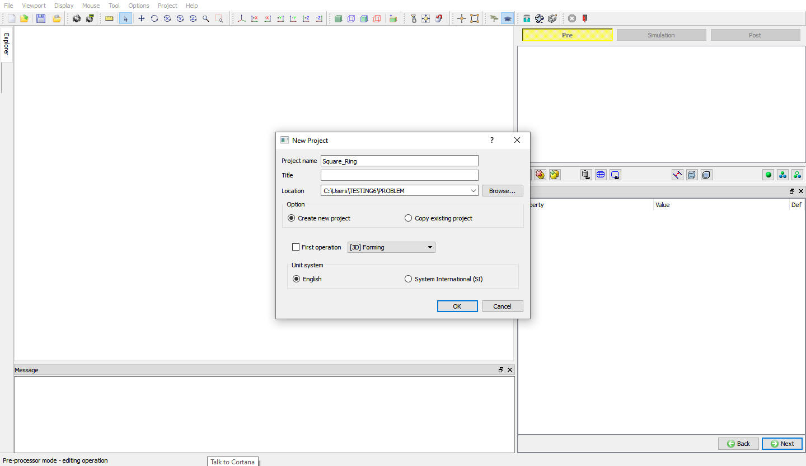
New Project selection window
User can also change the Unit system (File menu selected unit system will be selected by default) and add operation by selecting from First operation pull down list and checkbox (see Fig. 3DL2.5.).
Using copy Existing project option we can import previous saved projects as new project. Click on  to continue to open the operation.
to continue to open the operation.
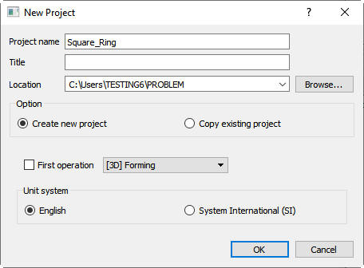
Assigning problem name
To simulate the forging of this square ring, only a workpiece and a top die are required - the bottom die is not needed due to symmetry.
Add 3D Forming operation from the Explorer Operations list. Add the operation by clicking on  button available next to 3D Forming or user can also add by drag and drop into the
Operation editor. (See Fig. 3DL2.6.)
button available next to 3D Forming or user can also add by drag and drop into the
Operation editor. (See Fig. 3DL2.6.)
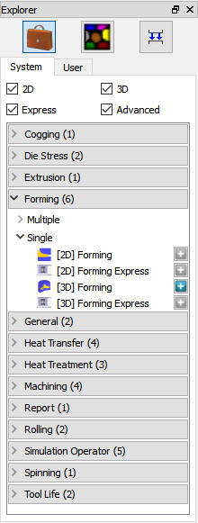
Operation Explorer
In this operation we are setting up simple Isothermal operation so, in Simulation control page Sim Mode tab, turn off the Heat transfer mode check box. Click on  .
.
In Material list window, load the 'AISI-1045, COLD' material from DEFORM Material library, Steel category using  (Load material data
from library) option. This can be done as shown in below Fig. 3DL2.7. by clicking
(Load material data
from library) option. This can be done as shown in below Fig. 3DL2.7. by clicking  button. Click on
button. Click on  .
.
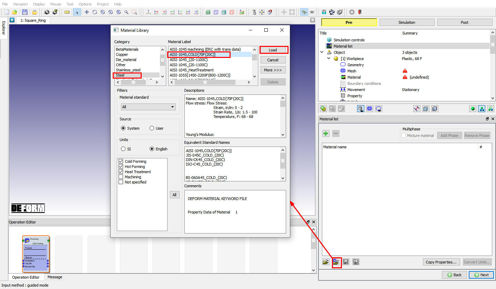
Material library window
If there aren't already two objects, add the two objects by clicking the insert object  button. The two objects will be named as Workpiece and Top Die. If there are three
objects, delete the Bottom Die by selecting it and clicking the Delete selected
button. The two objects will be named as Workpiece and Top Die. If there are three
objects, delete the Bottom Die by selecting it and clicking the Delete selected  object button (see Fig. 3DL2.8.),
then click on
object button (see Fig. 3DL2.8.),
then click on  .
.
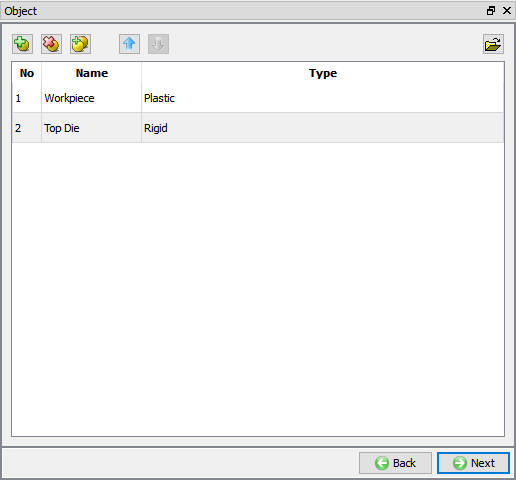
Object Window
In Workpiece window, change the Object name to Billet and select Object type as Plastic and temperature as 68°F as shown in Fig. 3DL2.9. Click on  .
.
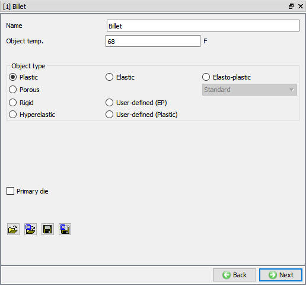
Billet object Window
In Geometry window, load SquareRing_Billet.STL geometry file from library using (Load geometry from library) option or can also be imported using  (Load
geometry from a file ) option as shown in Fig. 3DL2.10. The geometry is located in DEFORM installation folder \3d\LABS directory. Check the geometry
using the
(Load
geometry from a file ) option as shown in Fig. 3DL2.10. The geometry is located in DEFORM installation folder \3d\LABS directory. Check the geometry
using the  and options.
and options.
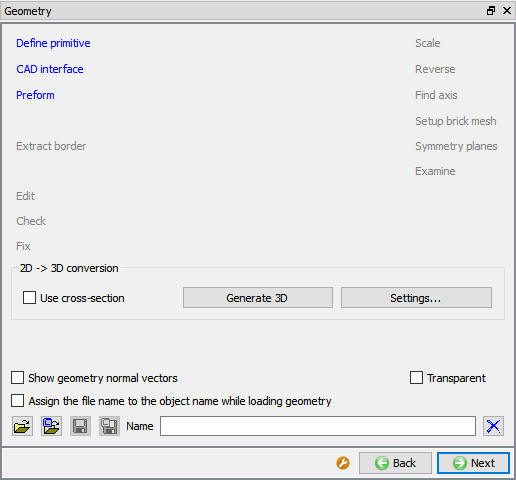
Billet Geometry window
Symmetry is being taken advantage of in this simulation and only 1/16 of the square ring is being modeled. Using Planar symmetry option define the symmetry planes to enforce the correct deformation (see Fig. 3DL2.11.). Click on
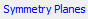
, under Planar Symmetry select the symmetry plane that is normal to the X-axis (as shown below Fig. 3DL2.12.). The selected plane polygon face on the Plane will get highlighted and the Plane Information will be listed in the Plane area.
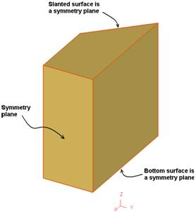
Symmetry Plane
Click the  button to add symmetry boundary conditions. This symmetry plane will now be listed in the Planar symmetry list as (1, 0, 0) which is the normal to the X plane. (See Fig. 3DL2.12.)
button to add symmetry boundary conditions. This symmetry plane will now be listed in the Planar symmetry list as (1, 0, 0) which is the normal to the X plane. (See Fig. 3DL2.12.)
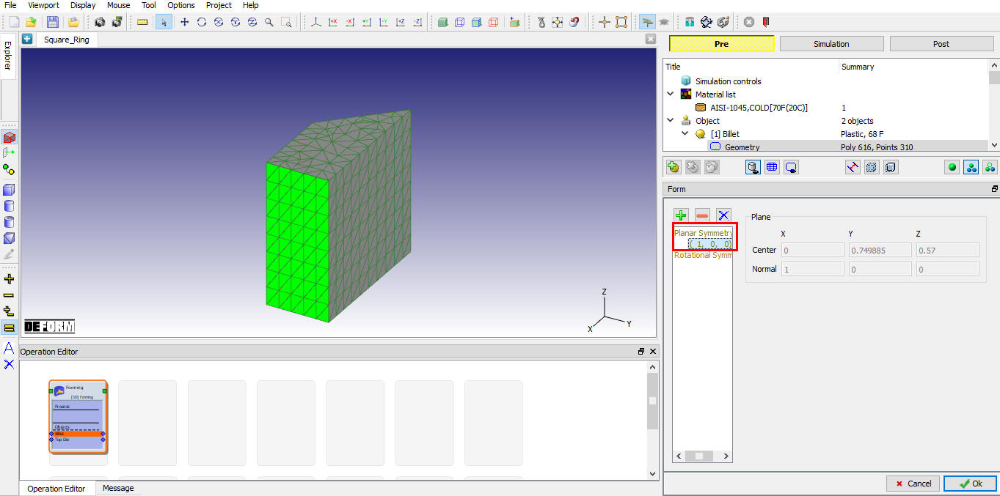
Assigned Planar symmetry on X Plane
Repeat the above procedure to add the Planar symmetry for the other two symmetry planes. First select the symmetry plane, so that the selected plane get highlighted and then use the  button
to add them. When all three symmetry planes have been added, the planar symmetry area should look like as shown in Fig. 3DL2.13. then
click on
button
to add them. When all three symmetry planes have been added, the planar symmetry area should look like as shown in Fig. 3DL2.13. then
click on  in Planar symmetry page and click on
in Planar symmetry page and click on  to generate mesh.
to generate mesh.
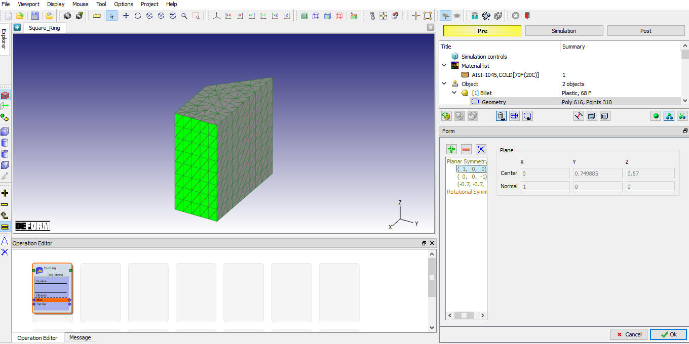
Assigned Planar Symmetry data for geometry
In Mesh window, change the Target number of elements to 8000 and click on
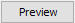
button. The surface mesh that is created looks good. So click the
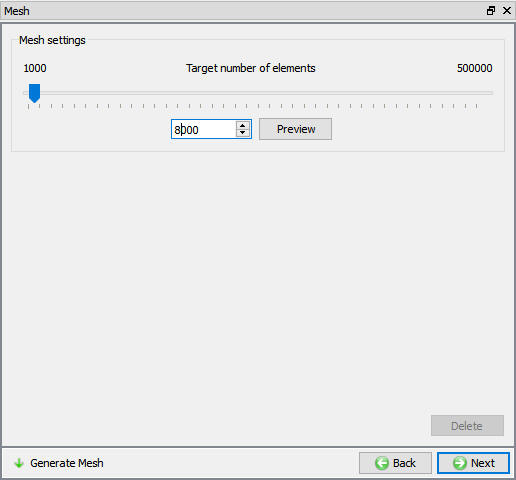
Billet Mesh window
To assign material for workpiece select the material AISI-1045 COLD from material window. This can be done as shown in below Fig. 3DL2.15. Click  to Boundary condition page .
to Boundary condition page .
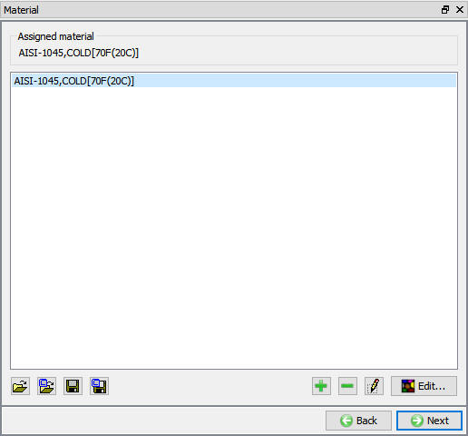
Billet Material window
In Boundary condition page observe the assigned Symmetry plane data, the Boundary Condition area should look like as shown in Fig. 3DL2.16.
Since it is isothermal setup, delete the default assigned Heat exchange with environment BCC. Click  until top die object window.
until top die object window.
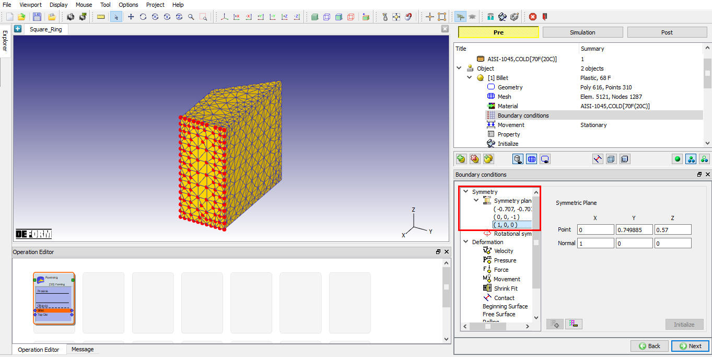
Symmetry boundary conditions
In Top die object window, keep the object type as rigid and temperature as 68°F, also make sure the primary die check box is checked and click  .
(See Fig. 3DL2.17.)
.
(See Fig. 3DL2.17.)
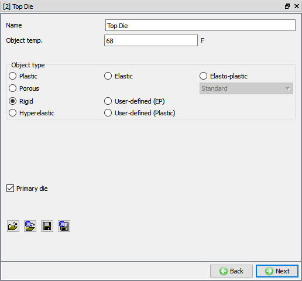
Top die object window
In Geometry window, load SquareRing_TopDie.STL geometry file from library using  (Load geometry from library) option. The geometry is located in DEFORM installation
folder \3d\LABS directory. Check the geometry using the
(Load geometry from library) option. The geometry is located in DEFORM installation
folder \3d\LABS directory. Check the geometry using the  and options, then click
and options, then click  until the Movement window. Since this is an isothermal problem no mesh nor related data need to be specified.
until the Movement window. Since this is an isothermal problem no mesh nor related data need to be specified.
Define a speed of 1 in/sec in -Z direction. Click  until the Contact window appears as both the Billet and top die are in right position.
(See Fig. 3DL2.18.)
until the Contact window appears as both the Billet and top die are in right position.
(See Fig. 3DL2.18.)
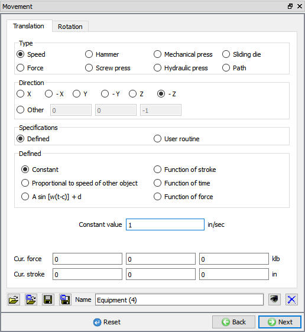
Top Die Movement window
Select user type radio button and click on  button. It will add the relationship between the Billet and the Top Die as shown in Fig. 3DL2.19.
button. It will add the relationship between the Billet and the Top Die as shown in Fig. 3DL2.19.
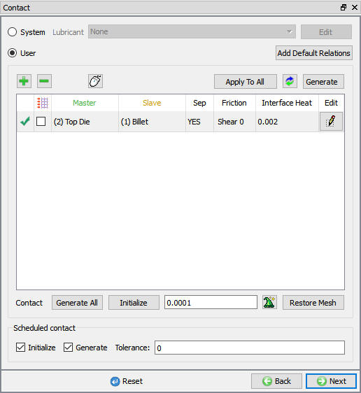
Inter-Object window
Define the friction for the relationship by clicking the  button. Use the pull-down menu to select the friction suitable for Cold forming (steel dies). (See Fig. 3DL2.20.)
button. Use the pull-down menu to select the friction suitable for Cold forming (steel dies). (See Fig. 3DL2.20.)
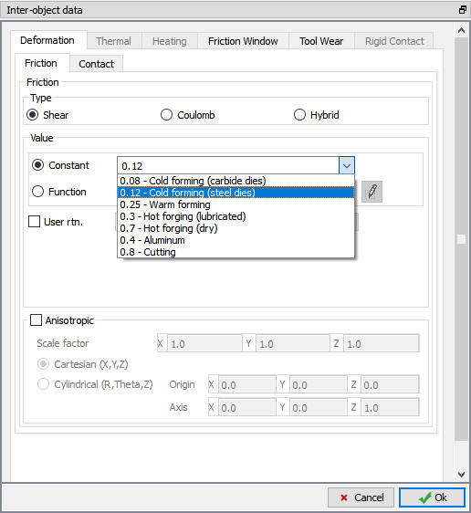
Inter-Object data definition window
Click  to go back to Inter-Object window, use
to go back to Inter-Object window, use  icon to determine a suitable contact tolerance (a value of about 0.00192"
will be calculated) and then click
icon to determine a suitable contact tolerance (a value of about 0.00192"
will be calculated) and then click  button to generate contact. If you rotate the objects around in graphics window, you will see that contact was generated between the two objects.
Click
button to generate contact. If you rotate the objects around in graphics window, you will see that contact was generated between the two objects.
Click  until Step window as no Stopping controls aren't necessary.
until Step window as no Stopping controls aren't necessary.
In Step controls window change the preprocessor setup mode to Expert by using the  (Switch to expert mode) icon from the tool bar. Expert mode will provide more options for detailed
settings. (See Fig. 3DL2.21.)
(Switch to expert mode) icon from the tool bar. Expert mode will provide more options for detailed
settings. (See Fig. 3DL2.21.)
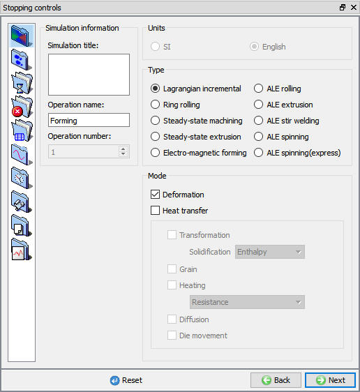
Step controls Main tab in expert mode
Select the steps tab ( ), set the Number of Simulation Steps to 30 and Step Increment to Save to 2. Set the Top Die as Primary Die. (See Fig. 3DL2.22.)
), set the Number of Simulation Steps to 30 and Step Increment to Save to 2. Set the Top Die as Primary Die. (See Fig. 3DL2.22.)
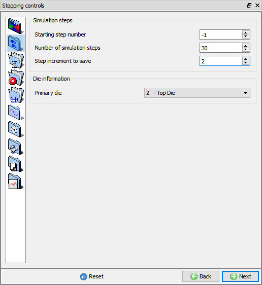
Step controls Simulation Steps tab in expert mode
To determine an appropriate step size, select the  icon and measure the edge length of a few of the smaller elements in the Billet. An average length of a short edge is around
0.06”. Use a Constant Die Displacement per step of 0.02 in/step, which is 1/3 of this small edge length in step increment tab (
icon and measure the edge length of a few of the smaller elements in the Billet. An average length of a short edge is around
0.06”. Use a Constant Die Displacement per step of 0.02 in/step, which is 1/3 of this small edge length in step increment tab ( ) for step size as die displacement. (See Fig. 3DL2.23.)
) for step size as die displacement. (See Fig. 3DL2.23.)
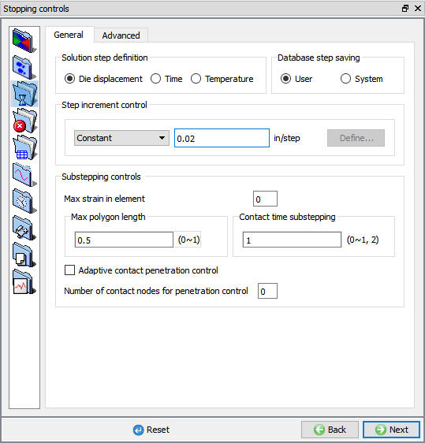
Simulation controls Step increment tab in expert mode
Click  and save a keyword file for the problem by selecting the File menu Export option.
and save a keyword file for the problem by selecting the File menu Export option.
Click on  action label to check the problem. The only warning should deal with Volume Compensation appear in the console window - ignore this for this lab. Generate a database
by clicking
action label to check the problem. The only warning should deal with Volume Compensation appear in the console window - ignore this for this lab. Generate a database
by clicking  action label.
action label.
Once the database has been generated, switch to the Simulation mode by clicking on  button above the operation tree.
button above the operation tree.
Click on the  action label to open the Run Options dialog Use the default Continue Run option to select “Continue from the last step” option
and then select the Simulation mode as Interactive and click on
action label to open the Run Options dialog Use the default Continue Run option to select “Continue from the last step” option
and then select the Simulation mode as Interactive and click on  button to run the simulation.
button to run the simulation.
Monitor the progress of the simulation by looking at the Simulation graphics window and Simulation Message and Simulation Log tabs, making sure that the  option is checked
(See). Simulation graphics tool bar options can be used to plot basic state variables and contact for objects while simulating the problem.
option is checked
(See). Simulation graphics tool bar options can be used to plot basic state variables and contact for objects while simulating the problem.
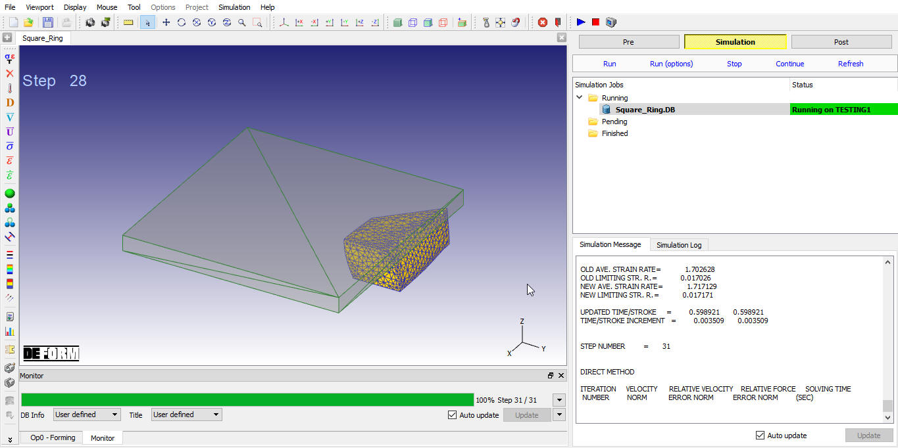
MO Simulation Mode
When the simulation is complete, review the results by switching to Post mode using the button above the Simulation tool bar. (See Fig. 3DL2.25.)
In reality this part is a full square ring, so it would be useful to be able to view the entire part in the Post-processor. To create the entire object, the small 1/16 section has to be mirrored about the symmetry planes. Clicking the icon open the 3D Mirroring window. (See Fig. 3DL2.26.)
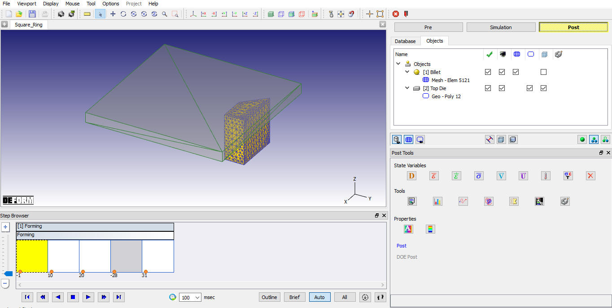
MO Post Mode
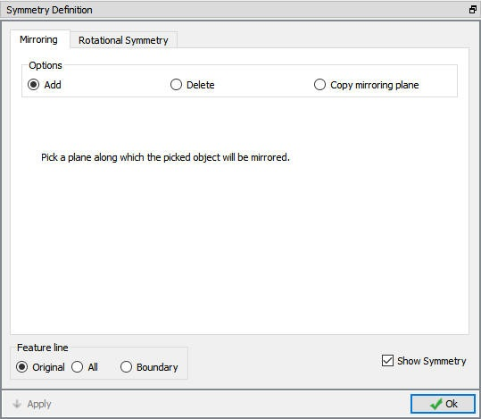
3D Mirroring window
Use the mouse to click on the symmetry planes on the Billet. Each time this is done a mirror image of the billet will be displayed. Repeat the process until the entire billet is shown. This procedure is illustrated below. (See Fig. 3DL2.27.)
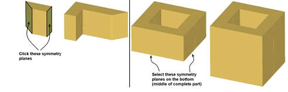
Symmetry definition
Once the complete part is displayed in the Graphics window, close the Symmetry definition window by clicking OK. Play through the steps to observe how the square ring deforms as it is compressed. Experiment with viewing the different state variables such as effective strain. (See Fig. 3DL2.28.)
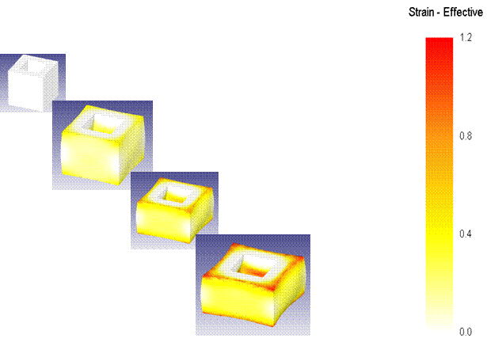
Strain effective result
When finished viewing the results of the simulation, use the  icon to return to the GUI Main window.
icon to return to the GUI Main window.
Related Topics: